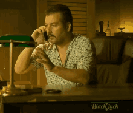

Een API (Application Programming Interface) is als een restaurantmenu.
Net zoals een menu een lijst met gerechten biedt met beschrijvingen
van wat elk gerecht bevat, biedt een API een lijst met beschikbare
functies en gegevens, met informatie over toegang tot en gebruik
ervan.
Hier is een leuk voorbeeld!
Stel je voor dat je een pizza wilt bestellen, maar je weet niet hoe je
moet koken. Dus je gaat naar een restaurant en bestelt een pizza van
het menu. De chef-kok in de keuken is de API en het menu is als de
API-documentatie die u gebruikt om uw pizza te bestellen (d.w.z. een
verzoek indienen bij de API). De chef-kok neemt je bestelling op,
maakt de pizza klaar en bezorgt deze bij je (d.w.z. de API retourneert
een antwoord). Nu heb je een heerlijke pizza om van te genieten, net
zoals je toegang hebt tot de gegevens of functies die je hebt
opgevraagd vanuit de API.
Capiche?

Meer weten? Ga naar: www.dlogic.nl/wat-is-een-api/
Ik ben verheugd om mijn Electron-applicatie te laten zien, die
oorspronkelijk is gemaakt als een opdracht voor school. Ik vond
Electron echter zo'n fascinerend en veelzijdig platform dat ik ervoor
koos om extra moeite te doen om de applicatie niet alleen functioneel,
maar ook visueel aantrekkelijk te maken.
(Voor de opdracht moest ik een API gebruiken van een genre dat begon
met de eerste letter van mijn naam. Helaas waren de opties voor mijn
specifieke brief beperkt en niet bijzonder spannend. Daarom heb ik
besloten om het project in een nieuwe richting te sturen en een andere
API te kiezen die ik interessanter en leuker vond.🤭)
Deze applicatie is een bewijs van mijn creativiteit en
probleemoplossend vermogen, evenals mijn toewijding om werk van hoge
kwaliteit te produceren. Door mijn eigen persoonlijke interesses en
ideeën in het project te verwerken, kon ik van een standaardopdracht
een showcase maken van mijn capaciteiten als programmeur en ontwerper.
Ik geloof dat deze applicatie een geweldige weergave is van mijn
passie voor technologie en mijn vermogen om onafhankelijk te werken en
mijn eigen ideeën tot leven te brengen. Ik ben ervan overtuigd dat het
indruk op u zal maken en mijn potentieel als waardevolle aanwinst voor
elk team zal demonstreren.